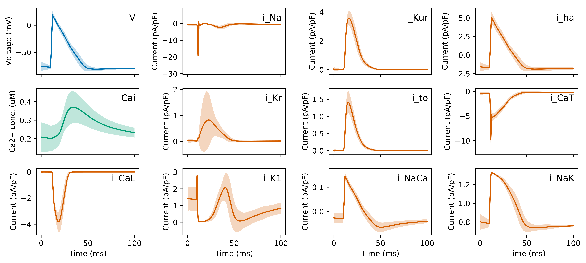

Constructing an action potential model: it's easy as ABC?
Charles Houston (cph211@ic.ac.uk )
Good afternoon.
The title of my presentation is ...
This was an entirely computational project based on developing a mathematical description for the action potential of a cardiac myocyte.
I'm going to lead the presentation with the motivation behind this project, which I think is useful to frame the work within the overall goal of my PhD.
Computational modelling of cardiac systems has become an important tool to generate and test hypotheses that may be difficult or impossible to test in a biological or clinical setting.
This video is an example of a simulation of fibrillation in a human atria.
A commonality between the majority of modern models is their use of homogenised approaches where the tissue is modelled as a continuous medium.
However, by their nature these simulations do not account for cell-level propagation between individual myocytes...
This is a recording of a reentrant circuit in a monolayer of myocytes showing the feature which may drive the arrhythmia at the macro-scale is affected by microscopic mechanisms.
Towards a discrete-cell modelling framework
Discrete-cell simulations account for propagation between individual myocytes...
...but difficult to validate with biological experiments.
HL1-6 subclone have slow conduction velocity which enables validation through optical mapping.
First step to discrete-cell model is to construct a mathematical model of action potential of a single cell.
Discrete-cell models are an alternative to homogenised models, where cells are modelled as separate, connected regions in the simulation.
A major difficulty with developing these models is validating them with experimental data.
In our lab, we have a cell line, HL1-6, which have slow conduction velocity so can be used to develop a morphologically accurate, biophysically-validated discrete-cell framework for future modelling.
This is the goal of my PhD work. Before this can be completed we require a mathematical model of the action potential of a single HL1-6 myocyte.
Modelling an action potential
Fit to experimental patch clamp data using traditional methods which do not account for uncertainty in estimates.
Approximate Bayesian Computation (ABC) produces distribution of parameter estimates.
How is action potential modelled in a single cell?
The flow of ions through transmembrane channels is described by an equation with 'gating' variables.
Underlying these gating variables are systems of ODEs, which are themselves composed of variables describing the steady-state and time constants.
Parameters in equations are then determined by fitting to data from patch clamp experiments.
Standard practice is to use point estimation methods to set the parameter values.
Unfortunately, these ignore uncertainties around estimates, which has been shown to lead to discrepancies between models.
Approximate Bayesian Computation is an inference approach from machine learning that is used to obtain posterior distributions for parameters, allowing investigation of uncertainty and identifiability.
Hypothesis
The ABC approach can be used to construct a validated mathematical model of the action potential of a HL1-6 cell while taking into account uncertainties in parameter estimates arising from insufficient fitting data, biological variability and/or parameter redundancy.
This leads to the hypothesis of this project: state hypothesis.
There are three main parts of this hypothesis: the ABC method, parameter uncertainties and the validated mathematical model.
These constitute the three main aims of the project.
Aims
Develop an ABC implementation to estimate parameter posterior distributions for individual ion currents. Investigate sources of uncertainty and unidentifiability in parameter estimates. Construct the full action potential model and validate with experimental data.
Approximate Bayesian Computation (ABC)
Its useful to briefly explain how the ABC method generates its distributions over parameters rather than traditional points estimates to understand the following results.
So firstly, we have some experimental data from the specific current we are modelling, and a method to simulate that current using the formulation of ODEs in our computer model.
The essential idea is that for each parameter in the equations, we set a range of possible values governed by a simple uniform distribution.
We then randomly draw values from that prior and simulate using the model.
We only accept simulations that are close to experimental data.
This allows us to build up a posterior distribution of the likely values for each parameter.
In the specific implementation I use, this posterior is then used as the prior for in multiple iterations of this process for computational tractability.
In practice, this posterior distribution is a discrete approximation given by a number of 'particles'.
Aim 1:
T-type calcium current
A = activation, B = inactivation, C = recovery
Addressing the first aim to develop an ABC implementation to estimate parameter distributions, I developed a tool to use input of experimental data from publications and an ion current formulation from previous models and produce output of parameter posterior distributions.
This graph gives a representative example of output from the process.
The three graphs show results from the three standard patch clamp protocols used in this fitting - activation, inactivation and recovery.
Green circles are the published experimental data points, the red dashed line is the original parameter settings for the equations from a model that happened to be fit to the same data, and the blue line and shaded area represent the distribution of results from the ABC posterior.
Fast Na+ current
A = activation, B = inactivation
Finally, this is the fast sodium channel which is a critical component in the action potential.
There is small uncertainty in the output of the simulation but it appears to struggle to fit to the threshold voltage of the current, which may indicate a deficiency in the formulation itself to model this reduced current.
From all of these results, it appears from the small distributions in the output that the parameters in the channel equations have been well contrained.
However, these plots are only looking at the simulation output from a specific experiment, rather than the underlying steady-state and time constant variables in the ODEs themselves which manifest to this behaviour.
Aim 2:
Underlying variables
ABC could not constrain time constant curves with standard protocol patch clamp data. A = steady-state curves, B = activation time constant curve, C = inactivation time constant curve
Again, I will only show a representative result here.
Here are plots of the variation of these steady-state and time constants with voltage, each dashed line represents a single discretised particle from the ABC posterior distribution.
So we see that steady-state variables appear well constrained by the fitting process, but the temporal variables have wide distribution in both activation and inactivation.
As standard patch clamp protocols do not test temporal dynamics of the channel, this indicates an unidentifiability in these parameters.
Identifiability analysis
Distributions almost unchanged from uniform prior.
Suggests practical unidentifiability.
This is confirmed by looking at the distributions of these time constant parameters.
While we would expect a peak in the histograms, we see that they retain an approximately uniform distribution and there is little to no correlation between the variables.
These features all suggest practical unidentifiability, which results from a lack of appropriate fitting data.
It is instructive to mention here that this unidentifiability does not indicate ABC is an inferior fitting process to standard point estimation techniques, but rather its output includes additional information that can highlight these issues that would otherwise be missed. And is ultimately critical if we are to reproduce faithfully biological observations using these computer models.
Aim 3:
Full action potential model
Automaticity in 56% of runs with mean firing rate 4.9Hz (SD=2.0Hz) is comparable to experiments.
With the posterior distributions of channels, we do not have a single point to choose for each parameter.
Therefore in each simulation run we randomly draw from the distributions for each parameter. Interestingly, this results in the full range of full cell activity which can exist within the bounds of the uncertainty.
I ran 200 simulations in total, first for 100s of simulation time to obtain a steady-state and then recorded without stimulation for 5 further seconds. Over half of these runs displayed natural automaticity, which is also present in the HL1-6 cell line.
The average natural firing rate was quite variable and high at 4.9Hz with a standard deviation of 2Hz meaning that some simulations, such as the one on the right, are unlikely to be physiological.
However, general qualitative features for a large portion of the simulations was similar to activity in HL1-6 cells.
Uncertainty quantification

A significant advantage of ABC is we can propagate the uncerainty in each parameter up to the macro behaviour of the channel.
These are the results from paced simulations showing the variability between different simulations and the main ion currents in a single paced action potential.
The quantitative measurements of action potential duration at 90% repolarisation, resting potential, amplitude and overshoot potential were calculated.
In summary, the overshoot potential and amplitude were comparable with biological experiments. However, the computer model had a more polarised resting potential and reduced APD.
It is believed that the more polarised resting potential is a result of the inconsistency in the sodium channel fitting, lowering the threshold potential to fire an action potential and thus lowering the voltage at which the model can maintain steady-state.
The reduced APD could be due to the fact calcium dynamics were unchanged from the original mouse ventricular cell model, and in that work they also noted a reduced APD compared to experiments.
Conclusions
ABC is an effective approach to infer model parameters while accounting for uncertainties. Standard protocol voltage patch clamp data is not sufficient to completely constrain time constant parameters. The full action potential model reproduces qualitative and quantitative characteristics of the HL1-6 myocyte.
So, to finish off this presentation, I believe the hypothesis can be partially accepted.
The first aim was satisfied, in that a ABC implementation was developed to infer model parameter distributions from fitting data.
The second aim was also satisfied, and showed that time constant parameters in the model could not be effectively constrained by standard voltage clamp protocols.
Finally, the third aim was partially satisfied, in that the model reproduces some qualitative and quantitative characterisitcs of the HL1-6 myocyte, but futher work is required to fully validate the cell model. This work is already underway.
Acknowledgements
Dr Chris Cantwell
All members of ElectroCardioMaths Programme
British Heart Foundation